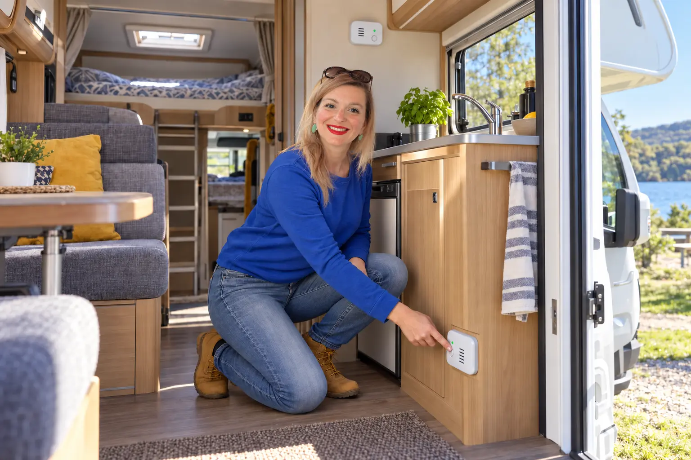

Historie z drogi.
Raporty podróżnicze · Codzienne życie kampera · Wiedza o kamperach · Kobieta wykonuje własną pracę
Czujniki gazu w kamperach: Który detektor naprawdę chroni?
LPG, tlenek węgla i "gaz znieczulający" wyjaśnione jasno – z testami laboratoryjnymi RMI, kontrolą zakupu, instalacją i jasnym planem alarmowym.
Przeczytaj przewodnik już →Odkryj Polskę według regionów
Odkryj Śląsk
19 miast: artykuły podróżnicze od Bielsko-Białej do Katowic, od Cieszyna po Częstochowską.
Nowa sekcjaOdkryj Mazury
Jeziora, lasy i miasteczka portowe – pierwsze pomysły na podróże do kolejnego polskiego regionu.
Nowa sekcjaOdkryj Morze Bałtyckie
Ze Świnoujścia przez Pomorze do Piasków, z moimi raportami z wybrzeża.
 Osobisty raport z podróży
Osobisty raport z podróżyŚwiąteczny czas w Bielsku-Białej: mój spacer wśród świateł
Światła nad zaułkami, promienna choinka i Reksio w świątecznym stroju: moje osobiste świąteczne chwile z Bielsko-Białej.
Najważniejsze wydarzenie targoweMój polski kierunek z targów w Lipsku: Bielsko-Biała
Moje najważniejsze wydarzenie targowe z polskiego stoiska w Lipsku: Bielsko-Biała, Stolica Kultury 2026, ze starym miastem, rozrywką i Beskidami.
Rekomendacja podróży do PolskiBielsko-Biała: miasto, kultura i góry – moje propozycje na wyjazd
Co można robić w Bielsko-Białej? Moja rekomendacja podróżnicza do Polski z spacerami po mieście, rolnictwem ekologicznym, muzeami, Szyndzielnią i dwudniowym planem.
Historia warsztatuTeraz mój niebieski bus też musi trafić do warsztatu
3. i 5. bieg już nie działają. Pewne jest to, co diagnoza może jedynie ujawnić — i dlaczego niebieski skrzyż trafił na lawetę.
Raport podróżnyPiaski–Granica — na końcu drogi przed Kaliningradem
Las, śnieg, droga R10 i granica państwowa, która nagle staje się bardzo realna na cichej Mierzei Wiśli.
Rozbudowa i DIYDodatkowa bateria pod siedzeniem — wreszcie moc do ładowania
Nowe porty ładowania, większa niezależność i wyraźne oddzielenie między startem a mieszkaniem.
Codzienne życie kamperaMoja lista rzeczy do pakowania dla kampera — co tak naprawdę mam ze sobą?
Spanie, gotowanie, toaleta, prąd, narzędzia i życie na świeżym powietrzu: moja prawdziwa logika pakowania do T4.
Życie prywatne10 miesięcy życia w najmniejszej przestrzeni
Między widokiem na jezioro, deszczem, codziennymi przestawianiami i wolnością: co życie w T4 naprawdę ze mną zrobiło.
Raport podróżnyZima na Energylandii — mało snu, dużo zabawy
Z czerwienią między kolejką górską a opadami śniegu: głośna, zimna i niezapomniana zimowa wycieczka.
Kobieta wykonuje własną pracęSzaleństwo: tankuję benzynę, benzynę i olej napędowy
Benzyna i LPG napędzają czerwony samochód do przodu, diesel ogrzewa go: moje codzienne życie z trzema paliwami.
Kobieta wykonuje własną pracęStary system gazowy z bagażnika
Zbiornik paliwa został przeniesiony do slotu na koło zapasowe — i w końcu z tyłu Red pojawiła się cenna przestrzeń do przechowywania.
Rozbudowa i DIYWięcej miejsca do przechowywania w bagażniku
Dodatkowa warstwa drewniana zamieniała stos bagażu w codzienny tył z ustalonym obszarem.
Historia warsztatuCzerwony nas opuścił
Awaria silnika na autostradzie: trudne pożegnanie z moim pojazdem, domem i wiernym towarzyszem podróży.
Codzienne życie kamperaGotowanie i pieczenie w najmniejszej przestrzeni
Kawa, zapiekanka i ciepłe posiłki: Tak właśnie działała moja prawdziwa kuchnia w czerwonym T4.
Codzienne życie kamperaMoja pierwsza toaleta w kamperze
Proste, mobilne i wcale nie efektowne — dlatego toaleta z wiadrem wciąż była ważnym początkiem.
Rozbudowa i DIYNowe samoloty dla Czerwonych
Więcej bagażu na dachu, więcej miejsca mieszkalnego w autobusie: dlaczego ta niewielka renowacja tak bardzo zmieniła drogę.
Wiedza kempingowaAdaptery do butli gazowej w Europie: które połączenie pasuje?
D1, D2, D3 czy D4? Duży stół wiejski z flagami, nici i ważną różnicą między wypełnianiem a usuwaniem.
Wiedza kempingowaKoty w kamperze — tak przyzwyczajam Timmy'ego i Susi do podróżowania
Pojemnik transportowy, przejazd samochodem, kuweta i lista do pakowania: tak krok po kroku przygotowuję moje młode kocie siostry do biwakowania.
Życie prywatneOd vana do kolosa — moja droga do prawa jazdy ciężarówki
Mój T4 robi się za mały: dlaczego robię prawo jazdy na ciężarówkę i marzę o pojeździe ekspedycyjnym. Dołącz do mnie!
Codzienne życie kampera8 miesięcy z suchą toaletą separacyjną — moje szczere doświadczenie
Dlaczego mój BOXIO rozczarował mnie na co dzień, co dokładnie poszło nie tak i które rozwiązanie później sprawdziło się lepiej.
Zrób to wszystko i naprawaSamodzielne zbudowanie suchej toalety separacyjnej — kompletny przewodnik
Jak działa ten system, dlaczego jest lepszy od chemicznej toalety i jak go zbudować w weekend.
Życie prywatneDlaczego jestem Tussy Van — historia stojąca za nazwą
Zmyślone i wciąż majsterkujące przy vanie: od zajętego "i", Ypsilon w nazwisku i gry z kliszami.
Raport podróżnyŻegnaj Kolonia, witaj Europa — 6 tygodni, 4 kursy, jedno lato
Z Kolonii przez Jezioro Bodeńskie (gdzie zawiódł piąty bieg) przez włoskie klejnoty kulturowe aż do polskiego Morza Bałtyckiego — z interaktywną trasą do przejazdu.
Raport podróżnySerce Polski — Ukryte skarby Warszawy
Legenda o Złotej Gęsi, Pałac Kultury Stalina z widokiem 360 stopni, Noc Muzeów oraz tajemniczy ogród na dachu biblioteki uniwersyteckiej.
Raport podróżnyMagiczny Kraków — Sale Sukienne, Słodkie Grzechy i Smok
Główny targ z suknionymi salami, słodką wskazówką od starszej pani i ziejącym ogniem smokiem Wawel z legendą.
Raport podróżnyCud Częstochowy — Madonna
Legenda o Czarnej Madonnie na Jasnej Górze, magiczny teren klasztoru i tętniące życiem centrum miasta tuż obok.
Raport podróżnyGdańsk szczerze — Splendor, beton i złoto Morza Bałtyckiego
Marzycielskie stare miasto, mnóstwo szarego betonu, Trójmiasto z Sopotem i Gdynią — oraz dwa muzea, które trzeba zobaczyć: Bursztyn i najlepsze muzeum II wojny światowej w Europie.
🇵🇱 Polska WiedzaGdzie legalnie można przenocować w Polsce?
Dzikie biwakowanie, parkowanie w lesie, "Zanocuj w lesie" i zasada parku narodowego: gdzie legalnie śpisz w samochodzie lub kamperze w Polsce — prawo, praktyka i regulamin karavanów.
podróżne życzenieAlgarve zimą — moje podróżne marzenie z kamperem
Jeszcze tam nie byłem: To uczciwe planowanie zbiera Twoją preferowaną trasę, oficjalne zasady prezentacji, pytania budżetowe oraz miejsca docelowe na późniejszą podróż.
Zrób to wszystko i naprawaZbuduj własny prysznic solarny za 30 €
Gorące prysznice za vanem — z częściami ze sklepu z narzędziami, godziną wolnego czasu i zerową wiedzą.
Kobieta wykonuje własną pracęT4 nie chce odpalić? Moja lista kontrolna 10 punktów
Zanim zadzwonisz do służby holowniczej: najczęstsi sprawcy — i jak ich znaleźć samodzielnie.
Rozbudowa i DIYTak właśnie zbudowałem podłogę — mój pierwszy T4
Dzięki zdjęciom srebrnego VR6: szablony, cięcia i korekowa podstawka z izolacją — van stał się domem.
Rozbudowa i DIYT4 VR6 jako codzienny kamper — kosmiczne cuda i triki DIY
Jak to wszystko się zaczęło: spanie bokiem, mobilna stacja wody, toaleta z suchym separacją i elektryczność całkowicie bez energii słonecznej.
Historia warsztatuBankructwa, pech i warsztaty polskie — koniec mojego VR6
Moja pierwsza duma, wizyta w warsztacie — i nagle całkowita awaria silnika. Szczerą historię.
Odkryj ŚląskBytom: Zabytkowe fasady, dziedzictwo przemysłowe i odpoczynek wśród zieleni
Atrakcje i moja propozycja na wizytę.
Odkryj ŚląskChorzów: Dzień wśród zieleni, gwiazd i przemysłowej historii
Atrakcje i moja propozycja na wizytę.
Odkryj ŚląskCieszyn: Uliczki, Wzgórze Zamkowe i Olza
Atrakcje i moja propozycja na wizytę.
Odkryj ŚląskDąbrowa Górnicza: Historia górnictwa i jeziora w jednym planie podróży
Atrakcje i moja propozycja na wizytę.
Odkryj ŚląskGliwice: Starówka, palmy i historia techniki
Atrakcje i moja propozycja na wizytę.
Odkryj ŚląskJastrzębie-Zdrój: Uzdrowiskowa przeszłość i miasto w przemianie
Atrakcje i moja propozycja na wizytę.
Odkryj ŚląskKatowice: Kultura, ceglana architektura i nowe perspektywy
Atrakcje i moja propozycja na wizytę.
Odkryj ŚląskPszczyna: Zamkowe wnętrza, parkowe alejki i spokojny spacer po mieście
Atrakcje i moja propozycja na wizytę.
Odkryj ŚląskRacibórz: Zamek Piastowski, Odra i dawne mury miejskie
Atrakcje i moja propozycja na wizytę.
Odkryj ŚląskRybnik: Rynek, górnictwo i popołudnie wśród zieleni
Atrakcje i moja propozycja na wizytę.
Odkryj ŚląskSosnowiec: Pałace, rezydencje przemysłowców i historie miasta
Atrakcje i moja propozycja na wizytę.
Odkryj ŚląskTarnowskie Góry: Historia srebra pod ziemią i na powierzchni
Atrakcje i moja propozycja na wizytę.
Odkryj ŚląskTychy: Urbanistyka, historia browarnictwa i Paprocany
Atrakcje i moja propozycja na wizytę.
Odkryj ŚląskWisła: Beskidzkie powietrze, spacery nad rzeką i góralska kultura
Atrakcje i moja propozycja na wizytę.
Odkryj ŚląskZabrze: Poznaj historię regionu pod ziemią
Atrakcje i moja propozycja na wizytę.
Odkryj ŚląskŻory: Spacer po starówce i Muzeum Ognia
Atrakcje i moja propozycja na wizytę.
Odkryj ŚląskŻywiec: Zamki, jezioro i widok na góry
Atrakcje i moja propozycja na wizytę.
Jeszcze nie znalazłem posta dla tego hasła wyszukiwania.